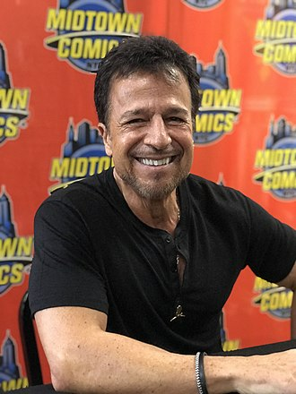

John Salvatore Romita, professionally known as John Romita Jr. (born August 17, 1956), is an American comics artist best known for his extensive work for Marvel Comics from the 1970s to the 2010s. He is the son of award-winning artist John Romita Sr.
Having illustrated both gritty street-level stories of characters such as Spider-Man and Daredevil and cosmic stories such as those starring Thor, Romita says he prefers the former, because "that is where I grew up. I use the same approach to each of the different story types – the story tells me what to do." He prefers to work in the Marvel Method. He considers The Man Without Fear to be his best work, due to the strong storytelling and the quality of the story.
John Romita Jr. received an Inkpot Award in 1994. With writer J. Michael Straczynski and inker Scott Hanna, Romita Jr. won a 2002 Eisner Award for Best Serialized Story: The Amazing Spider-Man #30-35: “Coming Home".
DC Comics
All-Star Batman #1-5 (2016)
Batman vol. 4 #80-81 (2019)
Dark Days: The Casting #1 (one-shot, with Jim Lee and Andy Kubert, 2017)
Dark Days: The Forge #1 (one-shot, with Lee and Kubert, 2017)
Dark Knight III: The Master Race #3 (backup story, 2016)
Dark Knight Returns: The Last Crusade (one-shot, 2016)
The Silencer #1-3 (2018)
Suicide Squad vol. 4 #11-15 (2017)
Superman vol. 3 #32-44 (2014-2015)
Superman: Year One #1-3 (2019)
Image Comics
The Gray Area #1–3 (2004)
Kick-Ass #1-6 (2018)
Marvel Comics
The Amazing Spider-Man #208, 210–218, 223–227, 229–236, 238–250, 290–291, 400, 432, 500–508, 568–573, 584–585, 587–588, 600, Annual #11, 16 (1980–1984, 1987, 1995, 1998, 2003–2004, 2008–2009)
The Amazing Spider-Man vol. 2, #22–27, 30–58 (2000–2003)
The Avengers vol. 3 #35 (2000)
The Avengers vol. 4 #1–12, 14, 16–17 (2010–2011)
Black Panther vol. 3, #1–6 (2005)
Cable: Blood and Metal #1–2 (miniseries, 1992)
Captain America vol. 7, #1–10 (2013)
Daredevil #250–257, 259–263, 265–276, 278–282, Annual #5 (1988–1990)
Daredevil: Man Without Fear #1–5 (1993–1994)
Dark Reign: The List – Punisher #1 (2009)
Dazzler #1–3 (1981)
Eternals vol. 3 #1–7 (2006–2007)
Fall of the Hulks: Gamma #1 (2010)
Fallen Son Death of Captain America #4 (2007)
ree Comic Book Day 2010: Iron Man/Thor #1 (2010)
Ghost Rider/Wolverine/Punisher: Hearts of Darkness #1 (1991)
Heroes for Hope Starring the X-Men #1 (1985)
The Incredible Hulk vol. 3 #24–25, 27–28, 34–39 (2001–2002)
Iron Man #115–117, 119–121, 123–128, 141–150, 152–156, 256, 258–266 (1978–1982, 1990–1991)
The Last Fantastic Four Story #1 (2007)
Marvel Super Hero Contest of Champions #1–3 (1982)
Marvel Super Special #5 (Kiss) (1978)
The Mighty Avengers #15 (2008)
Peter Parker: Spider-Man #57, 64–76, 78–84, 86–92, 94–95, 97–98 (1995–1998)
Peter Parker: Spider-Man vol. 2, #1–3, 6–12, 14–17, 19 (1999–2000)
The Punisher War Zone #1–8 (1992)
Scarlet Spider #2 (1995)
Sentry vol. 2 #1–8 (miniseries, 2005–2006)
The Spectacular Spider-Man #50, 121 (1981, 1986)
Spider-Man: The Lost Years #0, 1–3 (miniseries, 1995)
Star Brand #1–2, 4–7 (1986–1987)
Thor vol. 2, #1–8, 10–13, 16–18, 21–25 (1998–2000)
Ultimate Vision #0 (2007)
Uncanny X-Men #175–185, 187–197, 199–200, 202–203, 206–211, 287, 300–302, 304, 306–311, Annual #4 (1980–1986, 1992–1994)
Wolverine vol. 3, #20–31 (2004–2005)
World War Hulk #1–5 (2007–2008)
X-Men: Legacy #208 (2008)
X-Men Unlimited #7 (1994)
Icon Comics
Hit-Girl #1–5 (2012–2013)
Kick-Ass #1–8 (with writer Mark Millar 2008–2010)
Kick-Ass 2 #1–7 (2010–2012)
Kick-Ass 3 #1–8 (2013–2014)
Marvel Comics/DC Comics
Punisher/Batman: Deadly Knights (intercompany crossover, 1994)
Thorion of the New Asgods #1 (1997)